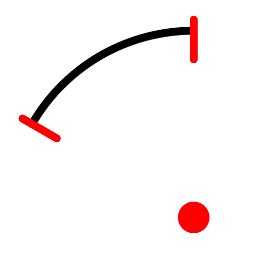

Centro, ponto, ângulos
Barra de ferramenta / ícone:


Menu: Desenho - Arco - Centro, ponto, ângulos
Atalho: A, R
Comandos: arcc | ar
Descrição:
Desenhe com arcos à partir de um centro, de um raio e de um ângulo dado.
Procedimento:
- Escolha a direção do arco na barra de opções.
- Defina o centro do arco utilizando o mouse ou entrando com as coordenadas
na linha de comando.
- Defina o raio clicando sobre um ponto do arco ou entrando com as
coordenadas na linha de comando. Você pode igualmente entrar com o raio
diretamente na linha de comando.
- Defina o ângulo de partida com o mouse ou entre com as coordenadas ou o
valor do ângulo na linha de comando.
- Defina o ângulo de chegada da mesma maneira que o ângulo de partida.